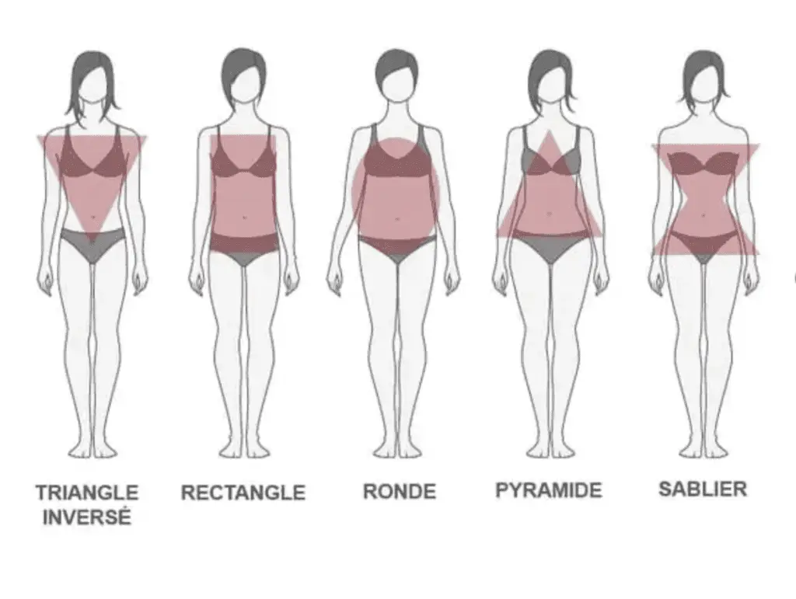
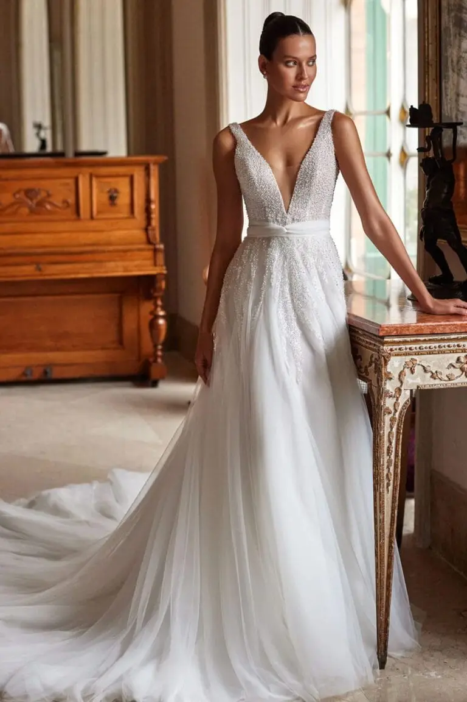
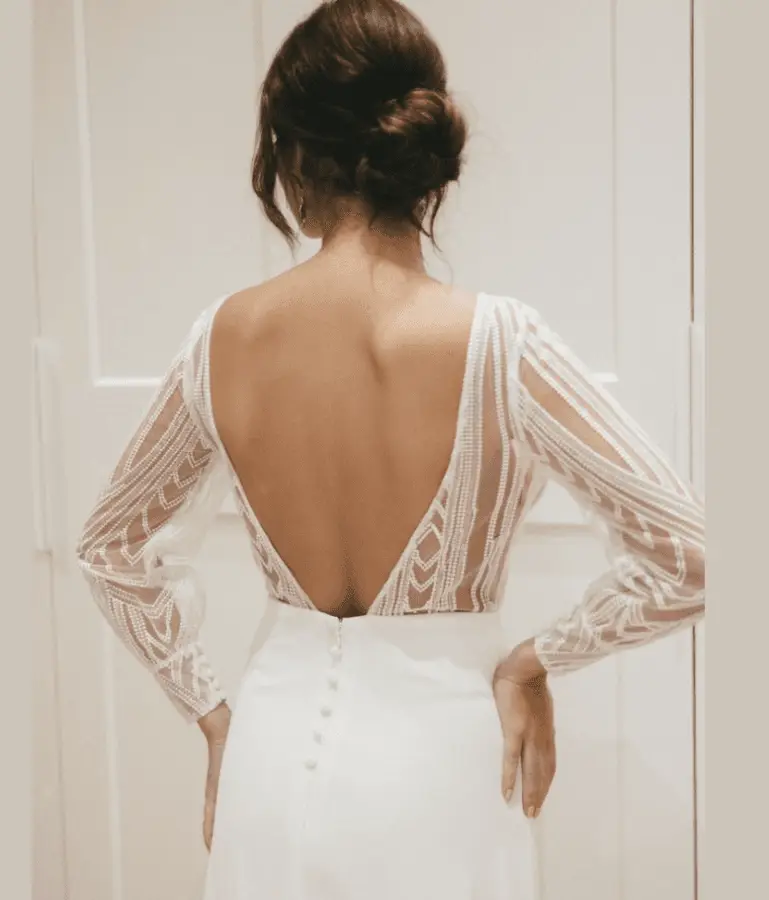
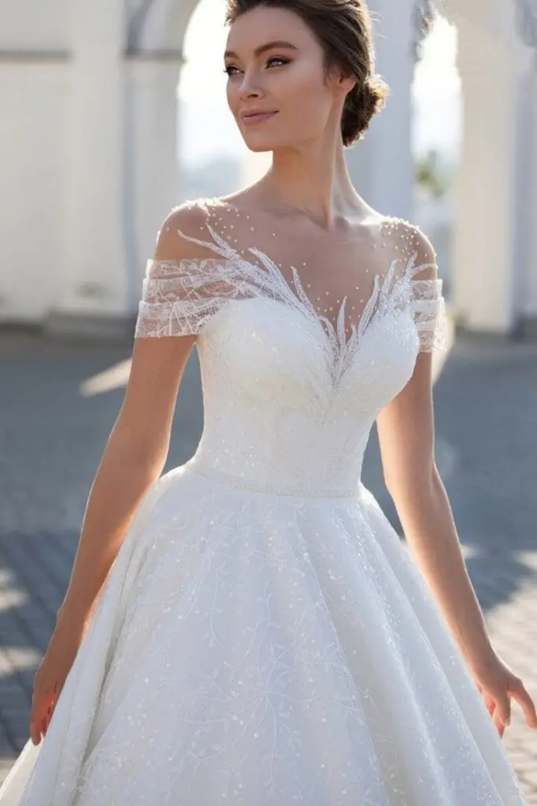
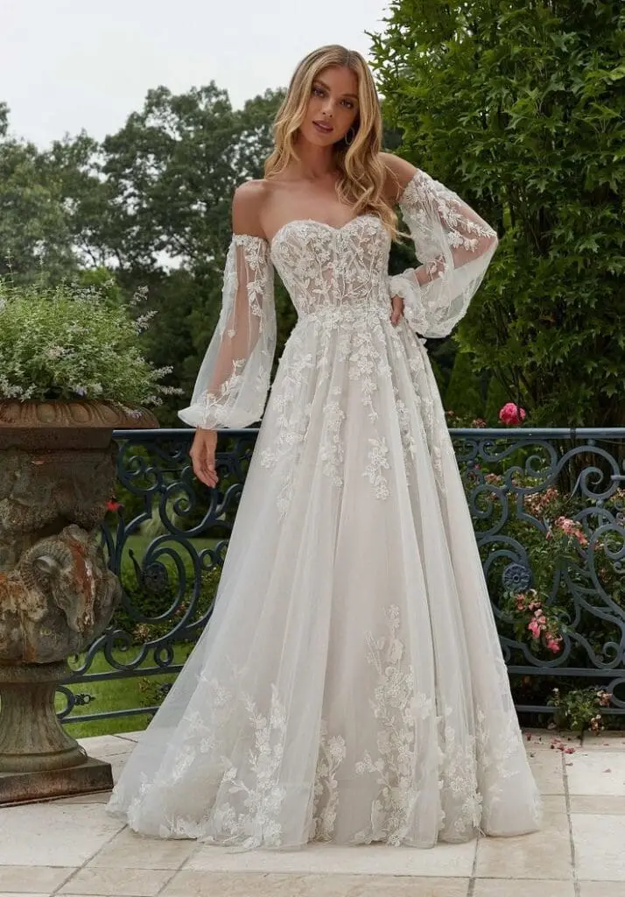
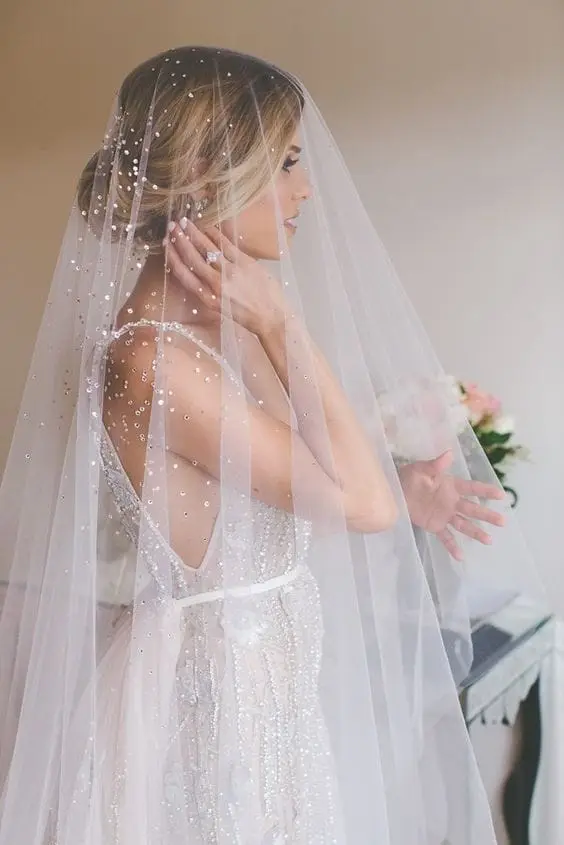
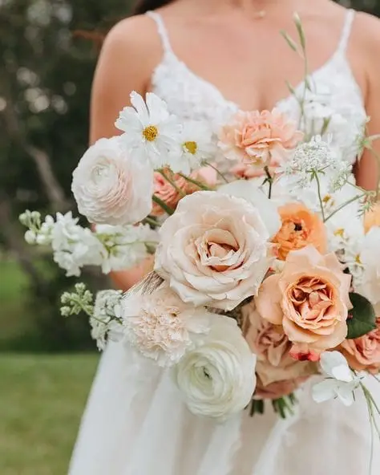
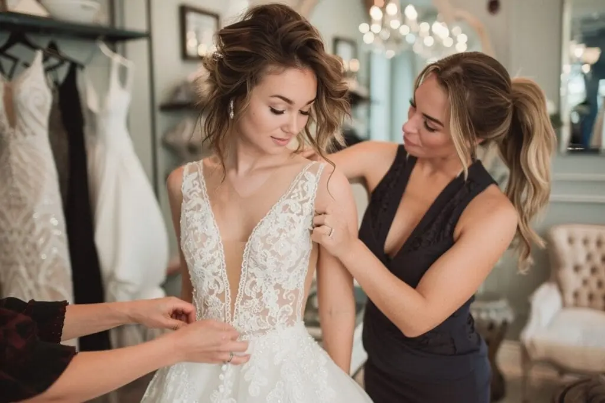

Your wedding day is a unique, magical moment, and the wedding dress is the centrepiece of your look. With the variety of styles, fabrics, cuts and colours available, you will be spoilt for choice! Wedding dresses come in every possible form to flatter you, but choosing THE dress can be difficult. The challenge is to highlight your best features while discreetly playing down your little flaws. In this article, discover tips for choosing THE perfect wedding dress in the Bordeaux region!

What is your body shape?
Perhaps you already have an idea of the style you want? Trying dresses on is vital, because sometimes a dress's cut doesn't suit your body shape. You may fall in love with a dress, then change your mind when you try it on and end up choosing a completely different one. To work out what suits you, it is essential to start by identifying your silhouette among the following 5 body shapes:

Inverted triangle
If your shoulders are wider than your hips and your waist is not very defined.
Advice: the main aim is to create volume at the bottom while avoiding adding bulk at the shoulders. How? With a closed neckline and a full skirt.


Recommended cuts: dresses with a V or plunging neckline are perfect for V-shaped silhouettes. Asymmetric or short dresses can also show off your legs while softening the square look of your shoulders.

Cut to avoid: empire neckline
Rectangle
If your shoulders, waist and hips are of a similar width.
Advice: the aim is to lengthen your silhouette and create the illusion of a more defined waist.

Recommended cuts: try playing with volume at the bottom to accentuate the curve of the hips, for example with a princess dress.

For the top, choose a plunging neckline and/or a backless design.

Cuts to avoid: tight dresses and straight necklines.
Oval
If your shoulders are rounded and you carry more volume around the tummy.
Advice: prefer flowing styles that don't over-emphasise your generous curves. For this kind of silhouette, simplicity is key. Choose a pared-back, refined dress without too much ornamentation.
Recommended cuts: empire (high-waisted), A-line and princess dresses suit you best! Don't hesitate to highlight a generous bust with a V or sweetheart neckline, and opt for a light fabric such as chiffon.
Cuts to avoid: mermaid and straight dresses


Pear
If your hips are wider than your shoulders and your waist is defined.
Advice: the ideal is to draw the eye to the upper body, play down your hips and define your waist.
Recommended cuts: for the top, opt for styles with thin straps or elaborate bodices. If you want to broaden narrow shoulders, a bateau neckline will look very alluring. For the bottom, choose a rather flared cut to soften the hips while defining your waist, such as a princess dress. An A-line dress would also look wonderful on you! Depending on your wishes, a pretty V-neckline or a sweetheart/straight bodice will flatter your bust. Flowing, airy fabrics are recommended.

Cut to avoid: mermaid dress


Hourglass
If your shoulders and hips are roughly the same width and your waist is defined.
Advice: women with an X-shaped figure are lucky enough to be able to wear a whole range of wedding dresses, each as different as the next.
Recommended cuts:
The mermaid or sheath dress hugs the body's natural curves and accentuates the balance between the hips and shoulders of the hourglass figure, while the princess dress defines the waist before flaring out voluptuously.
Generally speaking, any dress that is fitted at the waist will flatter this body shape.

Cut to avoid: empire dress. The flow of this cut starts at the bust, which tends to minimise a nicely defined waist.

- According to your bust: want to play down a generous bust? Opt for round or bateau necklines, and forget closed necklines. Want to create more volume at the bust? Avoid square or V necklines and favour a sweetheart neckline. You can also add draping to the bodice and choose an elegant open back.
- According to your height: if you are petite, voluminous dresses aren't the best option, as they tend to shorten your silhouette. If you are very tall, drop-waist or belted dresses are ideal, as they don't lengthen you further.
Don't forget alterations! They will ensure your dress is perfectly fitted to your body, whatever cut you choose.
Types of fabric and their characteristics
- Silk, shine and elegance: soft on the skin, light, flowing, delicate and prone to stains.
- Lace, romance and delicacy: a refined texture with a very elegant, timeless effect, well suited to fine details (sleeves, open backs, etc.), more or less delicate depending on the type of lace.
- Tulle, lightness and volume: an airy effect that adds volume without weight, can be combined with other fabrics for a layered effect, and often needs an underskirt or lining because on its own it can be too sheer.
- Crepe, clean and simple: light, flowing, easy to wear and care for, simple yet sophisticated, but may lack "structure" in some cuts.
- Mikado, thick and sophisticated: stiff yet soft to the touch, ideal for voluminous dresses or sculpted cuts, heavier than other fabrics and less fluid.
- Cotton voile, natural and comfortable: a relaxed style, easy to care for and breathable, ideal for a summer wedding.
- Chiffon, flowing and very light: an airy texture with a floaty, semi-sheer effect.
- Brocade, luxury and rich texture: a fabric woven with gold or silver, usually with floral or geometric patterns of oriental inspiration, perfect for winter weddings or majestic venues, but heavy and hard to wear for long periods.
- Velvet, softness and warmth: comfortable, with an elegant and sophisticated look and a thick texture that keeps you warm, ideal for a winter wedding, but less fluid and heavier than other fabrics.
So, as you will have gathered, if you are looking for an elegant, sophisticated wedding dress, silk, satin or mikado are made for you! Prefer a more flowing, romantic outfit? In that case, tulle, lace or chiffon will be perfect. Finally, if you are a laid-back bride, cotton or crepe will offer comfort and style.
Tell me your skin tone and I'll tell you which dress colour you need…
For your wedding dress to flatter you as much as possible, take your skin tone into account; it will bring out your natural beauty. Here are a few tips:
- Fair skin: it is best to avoid pure white, which can look dull. Ivory and off-white add a note of warmth and are more flattering for pale complexions.
- Rosy skin: this skin type goes perfectly with ivory, as its slightly yellow undertone warms the face without highlighting redness.
- Golden, olive or dark skin: off-white gives a luminous result without creating too strong a contrast. Cream shades also generally go well with this skin type.
At your wedding in Bordeaux, you will probably wear your dress for many hours. It is therefore essential that it is not only beautiful, but above all comfortable to wear. Is the fabric light enough? Does the dress drag on the ground? Do you have freedom of movement?
Some dresses can be quite thick or hard to adjust, which can affect your comfort. Consider the flow of the cut and the length of the dress, because yes, a long train or a mermaid dress is magnificent! But will it be easy to walk, dance, sit down and raise your arms throughout the day? If a movement feels difficult, then it isn't the perfect dress.
It would be a shame for these things to spoil a day that is meant to be the most beautiful of your life, wouldn't it?
Think about comfort!
Age: an important factor!
Are you 20 and dreaming of a sequinned mermaid dress? Or are you over 50 and more "comfort first" while still staying glamorous? Whatever your age, here is the essential advice for choosing THE unique wedding dress that will make you shine:
- Ah, the young years (20–30)! You are eager to try everything that makes you dream, aren't you? A mermaid dress that turns every head? Yes! A light, bohemian dress? Why not! And why not add a touch of colour for a little cheerfulness?
At this age, you can opt for flowing or fitted dresses, in light fabrics such as chiffon or lace. For accessories, you can play the modern card with a flower crown or original shoes to complete your look.
- At 30–40, you are in the prime of life, with a little extra wisdom, right? You know what you want and you are looking for a dress that combines comfort, elegance and sophistication. Want a timeless yet modern dress that flatters you without overdoing it?
A straight or empire cut would be a good choice, as would noble fabrics such as silk, satin or lace.


- From 40, comfort comes first! No more dresses where you wonder whether you will be able to breathe or move without feeling squeezed! Want a dress that flatters your curves without being too ostentatious?
A-line or empire cuts are perfect for every figure and very comfortable. Because a dress you "float" in rather than feel trapped in sounds good, doesn't it? You can also choose a midi or short dress, so you can move, dance and even run if the cake catches fire!
- At 50 and over, want a dress that nods to your youth without turning into Cinderella's ball gown? Then forget corsets that take your breath away (let's agree, you have lived enough for that!), and favour flowing fabrics such as chiffon, silk or crepe. These fabrics drape beautifully and allow great freedom of movement!
The wrap dress, chic and flattering, is also an excellent choice. And if you don't feel comfortable in a long dress, a midi or short dress can be an elegant, practical option. As for accessories, remember: less is often more! A short veil, a pretty pair of earrings, a discreet bracelet, and there you are, ready to shine without looking like a Christmas tree!
Whatever your age, the key is to choose a dress in which you feel like yourself. You will shine, whatever the style or cut. And remember, age is just a number… but a dress that fits you to perfection is what really matters!
The main accessories
Every accessory is unique; it should complement the dress without overloading it. As Leonardo da Vinci put it so well: "Details make perfection, and perfection is not a detail", hence the idea of finding the right balance. These suggestions will help you match your dress and accessories:

Shoes
If your dress is long, choose discreet shoes such as court shoes or block-heeled sandals. If you want to stay comfortable, ballet flats or loafers can also work, but be careful not to break the line of the dress.
Is your dress very elaborate, with details or patterns? In that case, choose simple, neutral shoes, or shoes in a colour that echoes the dress!

Veil
The veil is an understated, timeless option for a wedding.
Does your dress have a tulle neckline or details such as embroidery? Then a light tulle or lace veil will complete your look!

Jacket / Shawl
For a winter wedding, if you want to stay warm without looking like you're heading to the Arctic, a fur jacket or a satin stole is a good option.
If your dress is already very dressy, a shawl or a light cape will be enough to avoid the "winter in the mountains" look.


Jewellery
Jewellery is a bit like salt in a dish: too much and it spoils everything!
For a high-necked dress or one with details near the neck, forget necklaces and opt instead for earrings and bracelets.
If, on the other hand, your dress is simpler, favour bolder jewellery, such as a statement ring.

Flowers
Ah, flowers! They are the icing on the wedding cake: fresh, romantic and they smell lovely too! So match them to your dress:
- A classic dress? White roses, peonies or orchids will go perfectly! A bold dress? Then favour flowers in neutral shades such as white, cream or foliage.
- Choose seasonal flowers: Spring (daffodil, narcissus, peony, freesia). Summer (sunflower, rose, hydrangea, sweet pea, bellflower, lily, lavender). Autumn (dahlia, chrysanthemum, orchid, thistle, poppy, protea, hydrangea). Winter (amaryllis, mimosa, jasmine, camellia).
- Find out about bouquet shapes; there are lots (bohemian, round, cascade…)
Some flowers carry symbolism: roses for love, peonies for prosperity, and so on. Choose the ones that speak to you!
Give yourself time
Take the time to choose your wedding dress carefully… You know, it isn't a decision to take lightly, like choosing between two products at the supermarket! So why not start your search 9 months to a year before the big day? You're thinking: "A year before, really?" Well yes, believe me, it's worth it! This gives you enough time to try several styles, allow time for alterations and even find the dress that makes you say: "This is THE dress!" (You know, the one where you feel like a goddess and wait for an imaginary breeze to blow through your hair…)
Why wait until the last minute and risk endless stress running from shop to shop? The aim is to choose without pressure. And if you found the dress of your dreams in a single appointment, well, you are clearly a legend. But for most of us, a little time and thought won't hurt.
So, are you ready to dive into the adventure of the perfect dress, or would you rather wait until three weeks before the wedding to find that the dress you love is out of stock?
Ask professionals for advice
I could be a major ally in selecting your wedding dress. Beyond knowing the best designers and boutiques, did you know I can also guide you according to your theme, your needs and your budget? I particularly recommend two exceptional bridal boutiques in Bordeaux: la maison NCV COUTURE and LES FILLES FIDÈLES.
A bridal consultant can also advise you on what will flatter you most, taking into account your body shape and your wishes. How about personalised support, where every detail counts, to avoid costly purchasing mistakes?
So, are you ready to call on us to find the dress of your dreams without stress?

Keep your budget in mind
Set yourself a budget before starting your search and do your best to stick to it, while keeping realistic expectations. Dress prices can vary greatly depending on the designer, the fabric, the complexity of the design and the details (embroidery, beading, lace…). You have several options depending on your wishes:
- Buying new: if your budget allows and you are looking for a unique designer dress or a specific style.
- Hiring: a good-value solution for wearing a designer dress without buying it; just be careful not to damage it.
- Made-to-measure: if you want an exclusive, personalised dress (more expensive than buying).
Try on several dresses
Don't limit your fittings, even if you have a very specific dress in mind! It is important to discover different dress styles to find out which suits you best. Sometimes the perfect dress isn't a style you had in mind at first.
Be open and, as mentioned above, although some dresses suit certain body shapes better, there are no strict rules. The key is to feel comfortable and beautiful in the dress you choose.
The watchword is listening… listening to your heart in this emotional choice!
In short…
To choose your wedding dress, take into account:
- your body shape, it's the foundation!
- the fabrics
- your skin tone
- practicality
- age, which matters too… a little
- taking your time to choose
- calling on professionals
- setting a budget
- trying everything, really everything!
Finally, be yourself, choose a dress that makes you shine and, above all, stay relaxed! It isn't mission impossible… just a little shopping with a touch of magic.
Lovely Day Event offers several services
Wedding planning
I step in at every stage of your preparations and guide you through your choices, bringing ideas and suggestions so that your wedding looks like no one but you.
Wedding design
Creative and passionate, I am a certified Wedding Designer and I create a scenographic atmosphere that matches the theme of your wedding.
On-the-day coordination
I will be the conductor of your day, managing the suppliers, the set-up of your decor and the smooth running of this beautiful day.